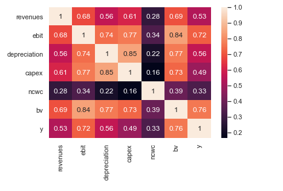
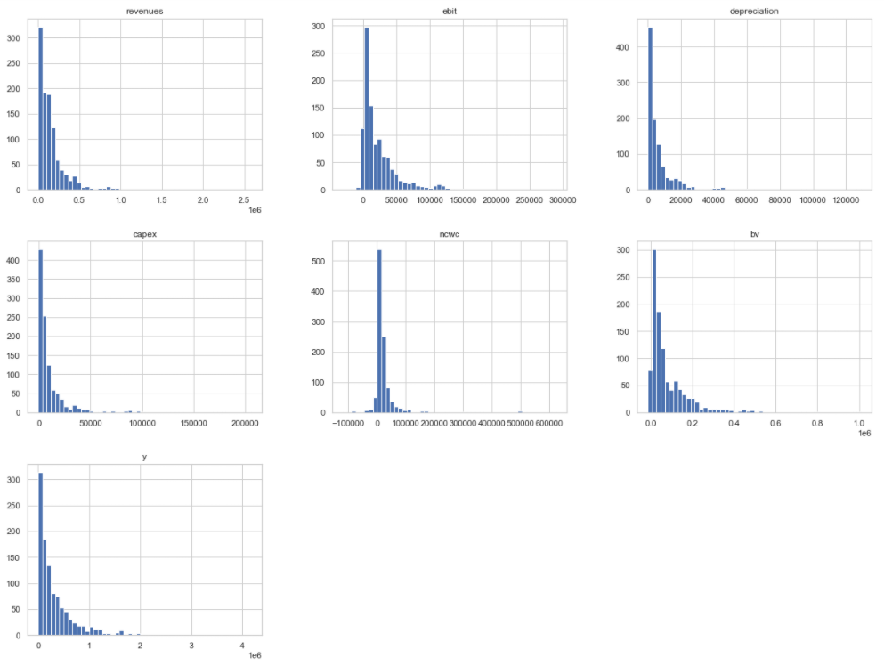
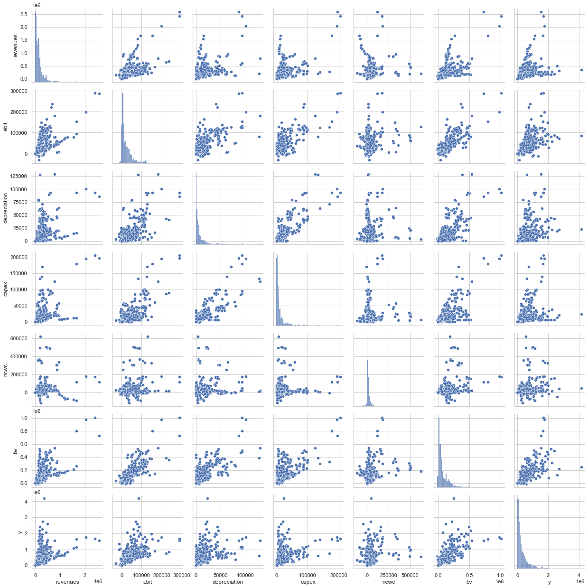
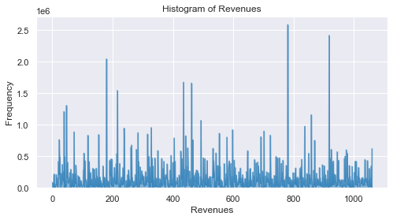
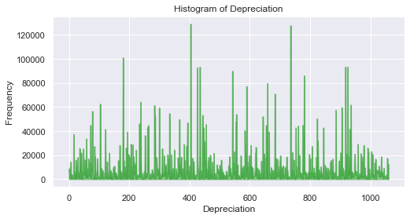
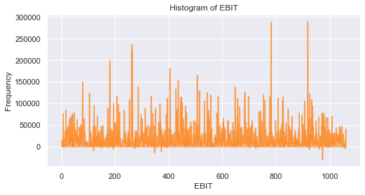
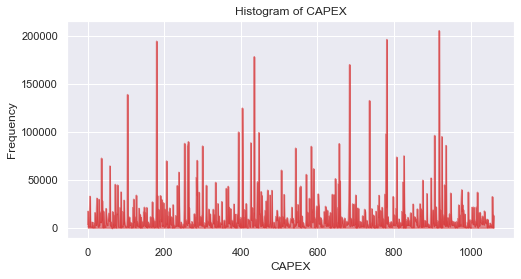
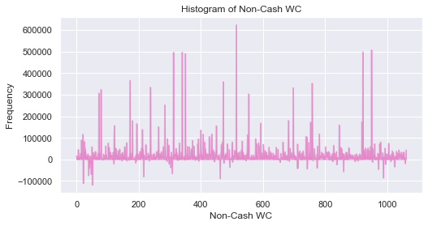
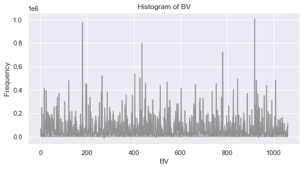
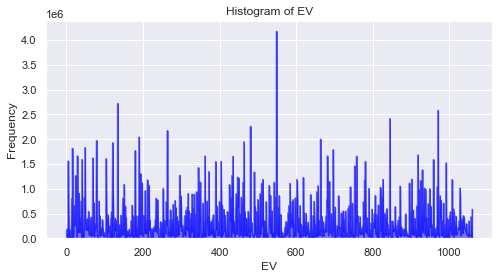

Financial Dataset Analysis Project
Exploring a Company's Financial Data
In this project, I have performed EDA to explore a company's finances over a year.
The aim of this project was to showcase my abilities with pandas and visualisation.
Whole Project
Just Code
Variable correlations:

Frequency Histograms for each column:

Correlation Scatterplots:

Area plots for the frequency of each column:






